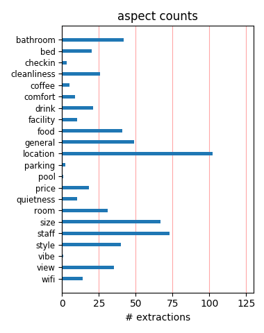
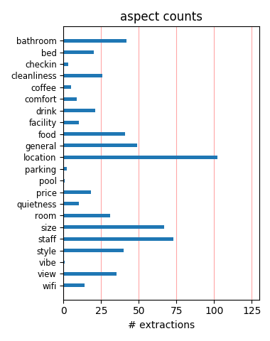

I spent romantic weekends in this hotel, everything was amazing, except one small thing - they don't have free internet. Rooms are clean and new, I got one with balcony and view was awesome. Very nice bar on top of Hotel and very good location. I will definitely return to this hotel!
Great location in Latin Quarter means we walked everywhere--Louvre, Notre Dame, Champs-Élysées, student area, etc. Didn't eat in hotel, but they recommended two fine restaurants for dinner. The bathroom has a window to the room that can be sort of covered but provides questionable privacy.
Absolutely fantastic hotel....great location....pleasant staff...well maintained property....agree with all others about good points....cannot believe it was in the center of everything.... Also agree with points about NO free WiFi......if management reads these reviews they should take hed to this point
the hotel was situated in a building with strange spaces. The room and the public areas were narrow, though they tried to get the best out of it. It appeared to be a design hotel, but you soon found out that it was a little superficial. The personel was very nice and helped us with restaurant reservations.
Just stayed here for overnight business trip. Booked using the iPhone app which worked a treat. Room was small but perfectly formed, quiet so slept well, shower was superb! No wifi in rooms, only cable and I forgot to bring my apple adaptor. Wifi is free in lobby. Would look to stay here again when in Paris for business..
Excellent location - walking distance from Notre Dame, Latin Quarter and metro stops. You can even walk to Louvre if weather is good and you are in the mood (20 mins or so). Lots of restaurants nearby, easy g snack / water shopping possible if needed. Rooms are somewhat small - but then how much time will you spend in them
First time in Paris. Rooftop view was more than we hoped for. Viewed city, day, night, and at sunrise. Metro is almost out the front door. The Louvre and Cathedral Notre-Dame are within easy walking distance. For you Priority Club members, use your points. They go further considering the exchange rate from the dollar to euro.
Fantastic location near St.Michel station and steps from the Sienne. Countless restaurants nearby, and strategically placed within the Paris metro system. Rooms are very nice; breakfast is astronomically priced. City parking garage nearby. Hotel is fairly new, and the wrinkles aren't all ironed out (ran out of towels on one day). 7/10
We stayed there at the end of Paris and just loved the exectuive hotel room we got which had the balcony! Hotel was brand new and everything was clean and neat ...I loved our room and the modern ammenities. The roof top terrace is a thrill ...staff is friendly and you simply CAN NOT beat the location. We will definitely stay there again!!
Spent 3 nights here with my Mom - fantastic location. Steps from the metro and train stations. Felt very safe at night. Lots of cafes and restaurants within walking distance. Rooms were modern - bathroom was very impressive! The almost $300 CDN per night was well worth the peace of mind (Holiday Inn brand - you know what you are getting), location and service.
Very nice hotel in perfect location, just a few steps from everything. We were pleasantly surprised by the quality of the service and accommodation. It seems that the hotel has passed renovation recently, the room and facilities are in very good condition. The staff was very friendly and polite. We booked few months in advance, so the price was very reasonable.
I would be hard put to find a reason to stay anywhere else in Paris. The hotel was clean, has two elevators, good bathroom, comfortable bed, stylish decor and above all else, a fabulous location. It is steps away from Notre Dame, Boulevard St. Michel, Boulevard St. Germain, Cluny, Les Deux Magots, the Metro and RER. It isn't too far from a Batobus stop, either.
Wonderful hotel right in the heart of the Left Bank. It was very walkablt to most places like Notre Dame, luxembourg gardens, Louvre , etc. Was surprised at the size of the rooms, they were quite spacious for Paris standards, also had a small balcony (which helped as we smoked) , and the bathroom was large enough to hols a TUB!!! All in all a satisfying experience.
Although the rooms are small, this hotel is definitely worth staying at, if only to experience the AMAZING shower!! The bedding was plush and comfortable, the staff was helpful, and the roof top was wonderful and not to be missed... our last night in Paris we went up and said good night to the beautifully lit Eiffel tower with a glass of wine. The location is fantastic - short walk to the latin quarter.
This hotel is located in the perfect location. Close to a lot of attractions. It's close to a lot of great restaurants and very close to the metro. The rooms are a bit small by north american standards, but still very comfortable. The view from the roof is spectacular, but they don't allow you to go up in the evening. The front desk staff was a bit snooty, but I think that's a french thing. Still a very nice hotel.
This hotel is fantastically located: very close to Notre Dame, lots of good places to eat nearby, yet it's quiet in the hotel for sleeping. The rooms are very luxurious and the beds are very comfortable! Had one of my best night's sleep in a long time! The staff is very friendly and helpful. They let me check in early when I arrived, which I really appreciated. I wish the WiFi was free, that was my one complaint about the hotel.
This is a new hotel in the latin quarter. The staff was a bit young and a bit inexperienced (they had never heard of the Picasso Museum - we found out it was closed, but I was still surprised a hotel concierge had never heard of it...) The rooms are small but standard for Paris and overall the value of the hotel given the great location for sightseeing was excellent. I'd recommend for people on a first sightseeing visit to Paris.
Friendly staff and a great location. We booked this as a treat at the end of our European trip where we stayed at mostly B&Bs and hostels. We were upgraded to a room with a balcony view of the Eiffel tower! The rooms are small, but equipped with everything you need and are very classy. If you have any complaints about the size of the room then I think that says more about you than the hotel! It's Paris and space it limited! 100% fantastic place!
From CDG airport take the RER 8.60 euro. Get offat Notre Dame and walk approx. 2 blocks and you are at the most convenient hotel in Paris. We arrived at 8am and our room ws ready! The room is small but we had a balcony that gave us extra room. The staff was great and most spoke English. The rooftop view is worth staying at this hotel. Metro, restaurants, the Seine, St. Chappelle, Conciergie and Notre Dame are just out the door. Louvre a 10-15 min walk.
My wife and I had a 3 day break here and it was the best short break we have had for years this was due to 1 Staff being so Friendly and Helpful 2 Very clean hotel throughout. All the staff were helpful and polite and always at the front was a guy called Jean Philippe nothing was to much trouble for this guy and because of the help and advice he gave it made our trip to Paris so much more enjoyable. Thank you to all staff and especially to Jean Philippe
Was in Paris on business. Hotel is in a great location on the Left Bank. Enjoyed being able to walk to my meetings across the river. My only complaints were hearing the noise on Rue Danton after midnight, the lack of clothing storage space, the weak lighting and the weak AC in the room. Enjoyed the rooftop deck and the patio off the bar in the lobby. Would stay there again. Everyone very nice, english speaking and accomodating. Lots of fun places in the neighborhood.
The hotel is well located for touring round Paris, being located near to Notre Dame. Its a Holiday Inn hotel so the service is good. It has a viewing area on the roof with good views of Paris. Rooms were very nice, quite spacious and quiet. Absolutely no problem finding a bar or restaurant, there are to many to mention within very close proximety to the hotel, so you won't starve or go thirsty. I would definaltely return to this hotel the next time I am travelling to Paris.
My wife and I picked this hotel as it is located close to Notre Dame with abundance of restaurants and access to public transport. The staff was very helpful and made our stay very enjoyable. The room was tiny but modern and clean. Room sizes in Paris are very different compared to the rest of the world but we were aware of it. Only regret is that they make you pay 5 euros for wifi on top of an already expensive rate per night. Would definitely stay there again as we loved the area.
I primarily chose this hotel for a 2-day stay in Paris because of its Left Bank location (Place St. Michel and Notre Dame) and the ease with which one can reach it from CDG Airport on the RER ( 2-minute walk from St Michel station to the hotel). The staff were very courteous and professional. The room was pleasingly decorated with an engaging color scheme. However, as others have noted, it was extremely small, which is, I guess, par for the course in central Paris at this price point (125 Euros).
Stayed for 4 nights at the hotel. The location is perfect the hotel is centered in shopping area. It´s quite close to Notre Dame and even closer to two Metro stations, very easy for getting around.The staff was friendlyl. Very clean and modern rooms, not big - with a holiday inn you know what you are getting. The bathroom was small but the breakfast selection was very good. The internet service was expensive. The roof top bar - only open Thursday, Friday and Saturdays from 16.30 was spacious and excellent.
Okay, staying at a Holiday Inn by the Notre Dame might sound a bit . . . unadventurous. But this was a great choice. Our room was very nice, with a balcony and view. The location is absolutely perfect: many sights including the Louvre and Notre Dame are walkable and there are cafes everywhere. Lots of transportation options as well. Noise was not an issue at all. Be sure not to miss the roof top patio! Absolutely tremendous city views including the Eiffel Tower. Beds were comfortable, room was recently refurbished.
Pluses Good position in a nice area. Pleasant staff but not overly helpful Bathroom while tiny was spotlessly clean and functional Minuses The decor is tacky and rooms are tiny. Don't believe the photos, they trick you. We had an "executive room" so I would hesitate to stay in a standard room. Easier to take the stairs than wait endlessly for the elevator that fits only 4 or 5 anyway (without luggage) We checked out 2 days early rather than feel imprisoned in this room. Not up to the normal acceptable average of other Holiday Inns.
As most of the other reviewers state, hard to beat the location of this hotel! Beautiful hotel. Great, friendly staff. The rooftop terrace and Happy Hour bar were a wonderful surprise! The views from the rooftop are wonderful...sunset just behind the Eiffel Tower! My ONLY complaint is the door to the bathroom. It is a frosted glass swinging door, which means you hear EVERYTHING going on in the bathroom. No privacy when needing to use the toilet. :( Our friends are visiting Paris in July and I'm highly recommending this hotel to them.
The holiday inn was in an absolutely excellent location in the latin quarter. The rooms were small, but very clean and nicely designed. Beds were very comfortable, with a choice of pillows according to preference. The rooms were quiet at night and we were not disturbed, despite the central location. The staff on the front desk were very helpful. Given the cost of hotels in Paris generally, this was value for money. Our only issue with our stay was that our room was cleaned only once in our three night stay. Refreshments too were only topped up once.
This was my first trip to Paris. I travel all the time for work and have been in several countries outside the US. This hotel is brand new - 6 months old - and boy, it was really nice. It is close to all the major sites - Notre Dame, Louvre, Orangerie, Musee D'Orsay, and is an easy walk to the Eiffel Tower. It is very clean, modern, and the desk personnel were wonderful. No problems at all during my 3 day stay. I ordered a cab to CDG my last day and that arrived with no problems at all. The bed was so comfortable - the best I had in 2 weeks in France!!
The Holiday Inn Notre Dame is in a great location. We loved being near Notre Dame and right in the middle of the restaurants and great shopping. Also, being near the Metro and RER was a good option for moving around the city. There is a Vinci parking garage within half a block of the hotel, clean and extremely convenient. The hotel staff has great english and are very helpful. The hotel was modern and clean. One of our rooms was pretty quirky, it had a window between the bedroom and the shower. You could sit and watch someone shower or watch TV, your choice.
Recently returned from a stay. Like many of said, the front desk staff is very poor. I found them not very responsive or helpful. As a Platinum member I was put in a handicap room which I was not not happy about. The shower was in the middle of the room with a curtain around it. When you took a shower, the bathroom was basically flooded. The big plus about this hotel is the location, but I did see a really nice Best Western, where we will stay next time. This hotel is not worth the 300 euro a night. Sadly, the poor service and staff has taken this place down.
The staff welcome you like family returning home... The location in St Michel was just perfect for the 7 night we stay here. Everything that Paris has to offer on your doorstep. The rooms are modern but on the small side...but hey this is Paris. The staff could not do enough for us, booked tours, gave dining advise, arranged transport ++++. A big thank you to Brice & Anna-Lisa on the front desk and Mathieu in the bar (he knows his cognac). This hotel made our visit to Paris very memorable.... Did I mention the roof top terrace on the 9th floor.... the best views in Paris!!!!!!
I guess title says it all. Travelled with gf, first time in Paris. With the hotel we got what we paid for. We had a standard room. Location was suberb, a block off a train station from CDG airport and within a easy walking distance from lots of attractions. Staff spoke good english and was very helpful. Extra points for bartender of lobbybar! A real pro! Facilities were new, modern and clean. Room even wasn't as small as expected, it even had a balcony! Shower was also suberb. Hotels rooftop patio offered great view of Paris. We didn't try hotels breakfast so can't comment that.
The view from the bathroom was right into the bedroom and back in too. Yep. A huge window in the shower wall between the bedroom and the bathroom gave absolutely no privacy. We used our foot blankets from the bed to hang them over the window each time we got back to the room for privacy. The room was very nice and the bathroom was too. There was a sitting area with a sofa and table. The location is wonderful. Walk right out your door and you are in the heart of everything. The view was of the buildings. Not much to look at. For the price it was nice, but i've stayed in better for cheaper.
Stayed here for 2 nights. Location is great for RER direct from CDG , so you can get quickly from the airport to the hotel and enjoy your time in Paris. Metro also very close however the location is pretty much central so its easy to walk around the city. Our room was comfortable with a great bed and immaculately clean. Wet room shower room, trendy if a little impractical. Tea and coffee in room and plenty of cafes and restaurants nearby. Staff were friendly. Roof terrace was great for a view of Eiffel Tower, Sacre Coeur and Notre Dame. Would have no hesitation staying here again next time in Paris.
The hotel was in a great location for sightseeing in Paris, really close to Notre Dame & eiffel Tower can be seen from roof top terrace which was great. The latin quarter is right on the door step and there are some great shops and resturants. i Would recommend a crepe from one of the street stalls - delicious!! The room wa really small, with not much space at all, especially in the bath room. The toliet was in a very tight space. The shower weas HUGE & took up most of the bathroom. The roof top terrace and the bar were really nice & the staff were very friendly. Would visit the hotel again, but would request a bigger room.
We were a family of 4 with 2 young children and stayed for 2 days. The room was pretty small (may be normal in paris) which initially shocked us. The staff were however very helpful - the front desk staff on dity was almost waiting at the door when we arrived as I was aking her for directions on the phone after getting down at the RER station. We were also able to check in by 9.30AM as our flight arrived in the morning without any extra charge. The hotel is very close to a metro and cafes and that was a big plus. The breakfast spread was reasonable though there was no live station meaning you couldn't order anything specific.
The Holiday Inn, Rue Danton is a very good hotel in jus the right area. There are narrow streets filled with bars, brasseries and creperies and other places to eat. The Metro is a 5 minute walk and if you run for fitness, the river bank is fantastic with more than its share of interesting sites. The rooms are good size for an inner city hotel that does not break the bank completely. The room decoration is stylish and any issues we had with anything were remedied immediately by the staff. If you are feeling tired after a long day walking, there are two movie theaters within 5 minutes walk that show English language movies with french subtitles (VO NOT VF)
I've taken to trying Expedia secret deals in order to find new places to stay in Paris so ended up here through blindly signing up. The reception is bright and clean, the staff are friendly and the rooms are modern and comfortable but a little small (like so many in Paris). The bathroom in my room was a shower room only but new and well done. The location is awesome, just south of Notre Dame and walking distance of St Germain des Pres - my favourite area. Well worth using and good for the price as (I've said before) 5-star hotels in Paris are outrageously expensive and 4-stars are a mixed bag. This 4-star is the right level of comfort at the right price.
This hotel was perfect for my recent trip to Paris for 4 nights. It is perfectly located and within walking distance of everything - shopping, restaurants, sightseeing attractions...you really could not ask for a better location. The rooms are, as others have mentioned, small. But when you are in Paris all you need is a room to sleep in at night that's comfortable and clean and provides all the amenities, which this hotel certainly does. Service from the Front Desk staff was great. Everyone I came into contact with were friendly and very helpful with directions. All in all, I had a great experience at this hotel and I would not hesitate to stay here again.
I travelled with my mum on this trip, we both were thrilled to receive a room upgrade on arrival. We were on the 7th floor with private balcony with a view of the Eiffel Tower. The hotel was within easy walking distance of Notre Dame and the metro. There were lots of cafes and restaurants also within walking distance. We used the "hop on hop off" bus, there are 4 routes, you can use your pass to use all routes. We also took the river cruise from Pont Neuf, this took in most sights and took about an hour. I would recommend Angelina for fantastic hot chocolate, this is on rue de Rivoli. If you fancy treating yourself then Laduree on the Champs-Elysees is fantastic.
I have spent a lifetime touring the world and stayed in hundreds of 3/4 and 5 star hotels. Here the service was very poor. Very small room. No Draws. Tea & coffee making facility is dangerous. Kettle based leaked when boiling. Tea bags were not replenished. Both bath and sink plugs did not work flooding the bath. All taps turned in reverse unconventional direction. No convenient space to put toiletries Room safe consistantly failed. All electrics failed on 1 occasion and took 30 mins to fix. Lift was very slow. The 9€ breakfast was trivial and took ages to serve even if there was a waiter. The location is excellent however you have been warned about staying in this hotel
Brand new hotel situated in a quiet street in the heart of Paris. Steps away from Notre Dame Cathedral, St Germain and the left bank of the Seine. The Louvre is a 15 mins stroll away and the Metro just 2 mins. The hotel is eco-contemporary and although the rooms are rather small they are of high quality chic design, air conned and the beds are extremely comfortable. We also had a state of the art bathroom with wonderful power shower. The hotel is one of the few that has a roof terrace with views all over Paris. There is also an quiet courtyard to take breakfast. The reception staff are extremely helpful and if necessary will speak English. We will definitely stay here again.
We got to this Hotel after not being able to book our first Hotel option given by a friend of ours that goes to Paris often. We don't know how that first option was going to be, but we are very, very pleased that we found this Hotel. Location is great, walking distance to Notre Dame, Le Louvre, great restaurants...also the terrace is great, we were there is March and it was freezing, but still great to be on top of a 9 floor building with a view to the Eiffel Tower. Rooms are small but clean and with a modern look, breakfast was fair, and staff, specially front office staff, was very friendly and helpfull. Next time in Paris this will be my first option, great value for money.
Everything was excellent, room was clean, staff excellent, location perfect close to the Louvre and Notre Dame, the rooftop terrace was amazing. the biggest problem was entering and exiting with a wheelchair or scooter, in order to get in I as the able bodied person had to go into the hotel and go to the service elevator and bring it up 1 floor and open a door for the disabled person to come in and then use the service elevator to our room. The only advantage was that we were very close to our room with the service elevator. the whole ordeal was unnecessary and demeaning to the disabled person and would be very difficult without an able bodied partner. Wireless internet is not free.
Just got back from the most fantastic weekend in Paris. I knew I'd booked a room with a view of the Eiffel Tower but didn't expect what we got. The room was nice and large with a large, long balcony with views over the rooftops to the tower, Place De La Concorde and Sacre Coeur. We also had a spiral staircase at the end of the baloncy which led up to the top floor of the hotel to another private balcony just for our use - shame for us it wasn't summer. If you can push the boat out for a bit extra I would fully recommend the queen Eiffel Tower rooms and if you can specify you definitely want room 804!! Hotel was lovely and clean and the staff we really friendly and it's so superbly placed for the sites and getting about.
The location is perfect, in the middle of all restaurants / bars and close to the Seine and centre. Staff is young, at first site a little cranky but there are very friendly. Standard rooms are a bit small, butt very nice, cosy and modern. You can pay a 35 Euro extra for the Eiffel Tower View, do it! Ask for a room on a high floor (6 or 7), the view over the Paris roofs makes it really special. There is a nice balcony. Room 711 is a nice standard eiffel tower room, its a corner room and has a extra large balcony and you can see the eiffel tower when you are taking a shower. Rooms are very expensive, better booking in front on there internet and pay less (175 euro for standard room incl. breakfast, 35 extra for the view).
The hotel had the best location in town. Close to Notre dame. It is in the Latin quarter of Paris which brings a lot of restaurants and shops right at your door step. You are never too far from any of the attractions. The hotel itself is ultra-chic and very modern. The rooms are compact but trendy . A visit to the rooftop is a must. You can see all of Paris from here. I preferred the view from here than from the Eiffel tower. The only con that I can think of is the staff's knowledge of Paris. Don't get me wrong. They are very helpful ( one of the staff members helped us when our car broke down). But they don't know much about Paris ( on some ocassions they didn't give us the right info or the best suggestions when it came to restaurants).
The location of this hotel, for Notre Dame and the Louve was excellent. It was in easy walking distance to those two sights. It was also well located for the metro as well. It made it very easy to get to other sights. It was nestled in a quant area with lots of wonderful cafes and the view from the roof was FABULOUS! The service was a bit snotty. There is two elevators, both of which are VERY small, so getting luggage and people up is difficult, but manageable. They do have a free computer to use with internet. After 10 min. you do pay. The room was ultra modern. Blacks and pink everywhere. The bed was great, very comfortable. The shower had wall faucets, an above faucet as well as a hand held. We are a young couple and it was very nice for us.
Best location for a clean modern room. Minutes from everything (metro, bus, food, attractions). Inexperienced staff. Not very useful or helpful when it comes to advice or concierge services. Nearly made us miss our flight. When we tried to book a taxi the night before, we were told that it was not necessary as a call in the morning 15 minutes before we needed to leave, would be sufficient. Next morning, there was a single clerk working the counter and she could not find a taxi or any transportation for that matter. And with more people waiting to check out, she lost interest in helping out. Finally had to rush to the nearby train station (with over 100 lbs of luggage) and take stairs 3 levels down to catch a train to the airport. Made it with 5 minutes to spare.
I have been a long time Intercontinental/Holiday Inn user. This hotel has much going for it. Comfortable lobby and bar area and decent size rooms. The bathrooms were also a good size and the shower was wonderful with excellent water pressure. The staff was always helpful and spoke good English. The location was perfect! Easy walk to all many of the favorite areas. The Metro/RER stations are a block away. Just one thing to be aware of, wireless is only in the lobby and you have to pay for it. You can connect in the room with a cable but again you will be charged. The wireless code can only be used on one device. Although there was no service on the roof because of the time of year we did bring some wine up and loved the view, especially when the Eiffel Tower sparkled!
We stayed over a hot summer weekend, the cool inside was very welcome, service was prompt, efficient and friendly. The room had twin beds and a double sofa, there was adequate storage and a powerful shower over the bath. There was an odd arrangement for lighting the bathroom with natural light - a clear window between the bed and the bath, there was a transliucent roller blind bit it was not very effective at preserving privacy. The roof top bar - only open Thursday Friday and Saturdays from 16.30 was spacious and excellent - and expensive. The location is quite close to Notre Dame and even closer to two Metro stations, very easy for getting around. Breakfast is much cheaper (and smaller) in the ground floor bar than in the basement breakfast room. Liked most of it, disliked the bath window.
Booked the Holiday Inn Notre Dame on the recommendation of a work colleague and we couldn't have been happier. I usually stay near the Etoile for work so this location was a fantastic change. The rooms were modern and clean, the location was BRILLIANT, and the roof terrace was amazing. The hotel is a stones throw from the buzzy restaurants of St.Germain and the Latin Quarter, so a quick walk will find you in the midst of many choices for lunch or dinner. Chill out in the evening after a long day walking with a beer on the roof terrace - on a hot day it was perfection. Come back when it's dark to see the Eiffel Tower lit up. Staff lovely & helpful, couldn't fault the hotel in any way. Only slight fault: very strange bathroom taps which were difficult to turn off with wet hands. Strange but true.
This is a nice and new hotel in one of the most interesting areas of Paris. Very close to a big metro/RER train station; close to Notre Dame Cathedral; just a few steps from the elegant St Germain Boulevard and inside the nice Quartier Latin. Unfortunately, I had a major issue during my staying: I had a reservation for an executive room, but I was put in a standard one. At the check out, I had to pay for the executive, as stated in the reservation. I had no time to argue due to my flight time, so let it be. Beware: the youth staff may not be prepared. Pros: location, cleanliness, very nice continental breakfast; staff of the breakfast Cons: strange room decoration, no privacy in the bathroom (there´s only a glass window between the room and the bathroom), small standard room, staff of the reception desk.
Good standard for a Holiday Inn - looks like recent and modern style renovation. Room small but well-equipped - flat screen tv, double size shower. Reception staff friendly & professional and spoke excelent English. Location great - close to metro station, which also served RER line to CDG airport. Nice local bars & brasseries. However, niggly errors in house-keeping each day which take the shine off a little. I'm not as picky as this will sound - however, stayed there for 3 nights - 2 nights didn't replace shampoo, 2 nights didn't replace tea/coffee/milk, 1 night didn't replace used flannels, 1 night didn't replace used cups. The shower leaked around the door every time we used it and when we raised this, no-one came to inspect / fix. Would stay there again, but would have been better without these issues.
Stayed here for 3 nights with wife and a kid. We had an Executive room, which maybe by Paris-standards was classified as large, but not so by our Norwegian standards. But when is Paris, accept Paris standards, and hotelrooms in this city are by my experience often small... The room on 2nd floor was clean and comfortable. Bathroom too was ok, but we did not quite understand the purpose of a large window between the bedroom and the bathroom. Breakfast was included in our stay and had a good selection between hots and colds, and was of high quality. The location of this hotel is great, very close to the river and the Notre Dame, and the metro and RER just a minute to walk from outside the hotel doors. Really like the St. Michel/Latin Quarter-area too, one of our favourite areas in Paris. We recommend this hotel.
We stayed in this hotel on our last few nights in Paris. The location is perfect – near Notre Dame and close enough to walk everywhere. We opted for an 8th floor room that had Eiffel tower and Parisian rooftop views. It was lovely to see the twinkling lights of Paris as we fell asleep each night. The service however was appalling. Our room was not ready on the afternoon of our arrival and we had to wait an hour and a half. The reception apologized but their tone said “I could not care less”. On our last evening when we returned to our room at 5:00pm after being out all day the room had not even been made up. We had to ask on more than one occasion to have this attended to and when it was it was a shabby job. So to sum up, location good, view lovely, service, what service and this was in low season! Service did not exist!
The hotel is just off Saint-Michel and thus very conveniently located for shopping, eating out and much more. When we arrived they were not able to find our reservation and blamed it on a problem with their computer. Hmmm. Once the issue was solved we got a room which had a nice and modern decoration and was well equipped. It turned out not to have a great view, but at least it was quiet. The setup of the bathroom was a bid odd and inconvenient if two people wanted to use it at the same time. Also the door of the bathroom was just a sliding door that did not really close/hide certain things... However, the bathroom amenities where of excellent quality. Breakfast was in the basement and offers a quite large variety of food. However, it can become a bit crowded. Negative point: They charge for internet, which is odd for a 4 star hotel.
We stayed 5 nights total at the Holiday Inn - Notre Dame. Our first two nights were free, which was great considering the price of the room. The free room was upgraded, even better, to an Executive Room. The room was large, with a nice size bathroom. The strange part is the shower/tub. It had a picture window looking out into the rest of the room. The window had a shade so you could have privacy while showering; however, the shade had to be opened from the room side of the shower, not the bathroom side. Thankfully, it was my husband and I sharing the room, so I wasn't too concerned about this, but could imagine how it could be a problem for business people traveling together and sharing the room. The last three nights were in an Eiffel Tower View room - while the room was smaller and the bathroom much smaller, the extra cost is well worth the view.
The specific hotel, it really do not worth the money someone have to spend... One of the worst experiences in my life for the money that I paid.... Being honest, the location is one of a kind. All the rest, are much much below average. Advice: Do not accept a room at the front side of the hotel...... You will never manage to sleep much later than 6-6:30am. The service you will get from the people at the reception is poor (I do not accept answers like: "What do u want me to do"..... ). The rooms are very small. I stayed there for 5 nights they never changed the bed sheets and the towels. The closet is tiny. The decoration / ambience is terrible.... The use of Internet cost a fortune... If you manage to go to the roof garden the view of the city is breathtaking. No money can buy.... Priceless. But the roof garden operates only 3 afternoons per week. So wrong....
The hotel location´s excellent. But the very first moment we got into our room, I found out the toilet´s bowl was -no doubt- not being cleaned from the former passenger !!! Nasty !! From then on, I never forgot to use my Lysol wipes... but this did not prevent me to find -after taking a shower- that the towel has two big black spots. I think the reduced space could be well taken advantage of, if instead of the bath´s door it has, the had installed sliding ones. You can never reach the closet as in that tiny space they´ve decided to put in front of it a mini-bar fridge, so it´s really a real ordeal to reach the safety box and the closet. There´re no bedside table, so I had to put my glasses and book on the floor. They could have well attached to the wall a small ledge. So, at the end, and although the location ...the quality was not good at all. A real pity !!!.
This hotel is a winner from all standpoints and we stayed here thanks to the previous tripadvisor reviews. We stayed in an executive room for six nights and highly recommend the hotel. It is under a year old and is very clean. The shower and water pressue is excellent. The executive room is small in comparison to U. S. rooms but it is a well organized room. We stored our suitcases straight up under the desk. There is a mini bar which can be used for beverages and other items which can be purchased right next door to the hotel in a small grocery store. There is a roof top area with tables and great views of Paris. This hotel is two blocks from Notre Dame cathedral and is a block from major metro lines and rail connections and is located on a side street. Excellent restaurants within walking distance. One metro station from Luxembourg gardens and within walking distance to Seine boat rides and the Louvre.
My family of 7 and I stayed at this hotel, and we were all extremely pleased. The hotel has a terrace at the top with a bar, with an amazing panoramic view of Paris. The hotel is practically brand new and has a very modern look. I loved it! The rooms were cozy, modern and elegant. It was nice to wake up, make a cup of coffee with my girlfriend, then go up to the top of the terrace and enjoy the view with our cups of joe. The best part is its right next to an RER so you can get anywhere in town. The service was excellent, the staff each night, recommended where we should all eat for dinner, and nailed it each time. Their recommendations were perfect, and they even made the reservations for us. I would definitely 100% return to Paris and stay at this hotel again. Just be careful, the bar in lobby can get somewhat expensive, especially if you come from the U.S. However, the breakfast was fantastic! Loved it!
What really set this apart from other hotels is that it is right in the middle of all of the hot spots. You can walk to notre dame, louvre, eiffel tower, and arc de triomphe. You can also go to the roof and see the eiffel tower at night seeing it lit from the roof is awesome. The service staff was very friendly and helpful. The rooms are modern and clean. The down sides of the hotel is that the rooms are extremely small, I was alone and I still felt cramped, if you are there with someone else be prepeared to be close to each other. Also, they have a set up where two rooms are behind one door i.e. the outside door reads "rooms 415-416" then there will be two more doors room 415 and room 416. I was a little bit perplexed by this. This causes a problem because if late at night you are sleeping and your neighbor comes late you hear two doors slam, which will wake you up.Other than those two things I think the hotel was pretty good.
Overall I enjoyed this hotel. Read all poor reviews to make sure I knew what I was getting into. Its in a great location, just a few blocks to Notre Dame and right in the middle of St Germain and the latin quarter, perfect for my girl friend and I to find lots of nice restaurants and pubs to hang out at in the evening. The hotel staff was friendly and helpful (no matter what other reviews have said) and they had a very nice roof-top bar. The only criticism I have is the design of the bathroom. Instead of having a fixed wall, there is a window between the shower and the bed (room). Now I've stayed at lots of hotel where this is the case, but usually the toilet is blocked so your partner in the bedroom can't view you on the toilet. Not in this case. The is only a see through shade between the bathroom and bedroom and you can see your partner "doing their business" from the bedroom. Not too comfortable even with a long-time partner.
My daughter and I stayed in this hotel for one week and I cannot even express how wonderful it was! The location was perfect as it was within steps of one of the main Metro stations in the fabulous Latin Quarter, as well as the entire area was filled with places to eat or shop, and filled with lively and safe crowds of people to mingle with. The staff was excellent and extremely helpful as far as aiding us in making plans and navigating around the city. We were provided with a surprise upgrade to an executive suite which was HUGE by Paris standards - very contemporary decor, continually spotless, with a jacuzzi tub and very large balcony with a breathtaking view of the Eiffel Tower and Notre Dame. The rooftop garden was an added plus when relaxing after very long days sightseeing. Thanks to the entire staff who were awesome and made our stay the most wonderful week possible! I would HIGHLY recommend this hotel to anyone who plans to visit Paris!!!!!
We stayed here with my PC points, and boy was I grateful. Upon check-in, I was informed we were being upgraded to a room with an eiffel tower view. I tried to contain my excitement for the remainder of the check-in process. I did attempt to use a little French, but the staff was extremely gracious and spoke English to me at each encounter. The room was tiny, but from the research I did on Paris before arriving, this is the norm. My only complaint about the room was the shower floods very easily. I thought it might be just our room, but I overheard another person mention that their room was doing the same thing. It was an easy fix since the showers were amazing with three jets. To drain the shower basin, just shut one or two jets off for a few moments. No harm no foul. The wireless internet was only available in the lobby at the cost of 5 EUR every 24 hours. Steep price, but since we were staying for free, I couldn't complain too much! Would go back in a heartbeat.
We saw this place when it was being turned into a hotel on a previous trip to Paris and thought the location was great so kept an eye out for it. We booked 3 nights on Priority Club points and got upgraded to a slightly better room with a very small sofa. Very easy to get to from the airport - no need to change stations, and about 4 mins walk. Lovely area with every type of bar and restaurant you could want just steps away and a little supermarket a couple of doors away to stock up. Pleasant lobby/bar area. Room was small but had all we needed. Very quiet as it looked out onto a side street behind hotel. Bathroom was one of those capsules which are all preformed but great shower etc. Bit funny that there is a clear window from bathroom to bedroom with a sort of see through blind. Roof terrace on top floor is lovely with nice views and we looked down from it to the rooms I assume are the executive ones with little balconies which looked nice. All in all a great base in Paris.
This is the first time we stayed at this Holiday Inn and to be honest it will be the last. I still rate the Holiday Inn as a brand, just not this hotel. The location was great, the staff were good and helpful, but the room looked great but when you came to use the sink in the bathroom you discover it can hold very little water. There was very little space in the bathroom and a definite lack of work-surface to set anything on. There was a nice feature in the wall between the bathroom and the bedroom, it was a panoramic window which had a pull down blind which you could still see through!! On our second day there the room was spotlessly cleaned. The third day the tea cups had not been changed and there was still rubbish on the floor. I suppose it was New Year's day. The room was an Executive Room for three adults, myself, my wife, and our daughter. The wardrobe space was 8 hangers which faced forward and a shelf. The rest of the space was taken up with the safe and dressing gowns etc.
I will start with good points: Location is very nice, close to Metro and RER stations and a lot of restaurants and cafes in the neighborhood. Staffs are very Friendly and the reception Staff helped us a lot. The Check in process was very fast less than a min. Room was perfectly clean and good sized for a Paris Hotel. Bad Points: their internet service is total disaster, they charge 5 Euro per day and there is No WIFI in the room so you will need a cable to get connected in your room. There is WIFI in the lobby but if you get connected in the room then you cannot use the WIFI in Lobby! Or you have to pay another 5 Euro per day for that too! And If you have device that does not support a LAN cable connection you have no choice but sitting in Lobby and get connected. The other problem was the Bathroom Door, there is absolutely no privacy in the bath and because of the sliding Glass door. Our Rooms windows could not be opened and that was bad too sometimes we really needed to get some fresh Air.
We have just returned from a weekend here and the location was fantastic for sightseeing. Great reception on arrival and friendly, knowledgeable staff who are only too willing to help (speak great English too!!) The room was very clean, compact and comfortable. Enough hanging space in the wardrobe for both of our cases. Safety deposit box in the room and the shower was amazing!! Our bed was kingsize and comfortable. Room service came daily! There was absolutely no noise in the room, we were amazed as we thought we'd be woken up early on Sunday morning but we heard nothing! We didnt eat at the hotel as there was so much choice elsewhere. The reception staff gave us some very good directions to some good patisseries, she even printed off a map for us so we wouldnt get lost! Our flight was very late on Monday night and we were able to leave our luggage in a secure room in the hotel until we were ready to leave Paris. All in all we had a wonderful stay, made all the better by lovely welcoming staff. :)
By now I am so sick of overpriced, mini hotel rooms in Paris that I can only say yes, the location is good, yes, the rooftop is excellent for viewing all of Paris, and yes, the breakfast is overpriced and hideous, served in a school cafeteria-like basement. Not enough staff to keep it clean, and the clientele....well, let me just say - oh, never mind. At all times of the day and night our room sounded as if we had a waterfall in it. The pipes seemed to be right behind the wall paper. We "upgraded" to an Executive Room only so that we would have a couch onto which to heave our suitcases. There is absolutely no shelf space, the closet fits two brooms. The bathroom is exactly as someone described it previously; impossible to shower without flooding. And so on. The problem with all of Paris is that unless I want to spend 500 Euros and (way) above, I will not get anything decent. To say a hotel has a good location is a pretty pathetic recommendation. Holiday Inn once again has sold out by licensing - pimping - its name to a mediocre hotel.
We have come to Paris midweek for half term. This hotel was reasonably priced and is clean and new. We had an executive room on the first floor. Breakfast was lovely as were all the staff. The location was fantastic - very near Notre Dame with lots of pleasant brasseries all around. The only 2 down points are firstly that the room, rented for 3 of us was a very, very tight squeeze. Once the sofa bed was made up there was almost no floor space at all. Certainly no space to open cases and the chair originally in front of the desk was left partially blocking the entrance, probably a bit of a fire hazard. My second grumble which I recognise may not be a problem for everyone is that there is no privacy in the bathroom. There is a window between the bathroom and bedroom putting everything on full view!! There is a blind but it is see through! As a somewhat portly woman of a certain age sharing the room with teenaged boys it was a big problem and I resorted to leaving them in the bar with a coke while I showered (for their benefit of course!)
I stayed here with my partner and my parents (separate rooms) on their first trip to Europe. Spent a great deal of time researching hotels as most 3* were small and had awful decor...what a find this was! Positives - Beautiful modern decor with flatscreen TVs, minibar, table, air conditioning etc. - Comfortable beds - Roof top with fantastic views over paris, so romantic! - My parents had a room with a balcony so request one in a higher floor - Small rooms but normal for European standards - 30 seconds walk to St Michel metro, 5 mins to Notre Dame and about 10/15 walk to the Louvre. - Right next to a small convenience store - Walk to Latin quarter, pubs and the river - Explore the back alleys for some boutique cafes - Very safe people with lots of people walking around even late at night - Good service Negatives - Bathtub floor could be hazardous as quite slippery but that's really it! Would definitely stay here again. I have added pictures but keep in mind I am using a wide angle lens so it makes it look bigger than it is. We stayed in a standard room.
Lovely new hotel in fantastic location, my only gripe would be that the rooms are definitely NOT designed by a woman - very poor lighting making it almost impossible for us girls to put on our make up, no drawer space, very little hanging space and what there was was restricted in length by the in-wardrobe safe (so no good for dresses etc), nowhere to put your toiletries in the bathroom, either by the sink or when having a shower. Can't comment on value for money as this was a couple of reward nights through Priority Club. Avoid the very touristy area near the hotel, turn right when leaving reception and head down that direction, much nicer. Would return if we could get a good deal but definitely wouldn't pay the full whack for the room that we had. Oh, one major plus point - fabulous roof terrace with 360 deg view of Paris, surprisingly better during the day than at night. Had a problem with our booking prior to arriving in Paris, however the hotel fixed it very quickly to our satisfaction with no problem. Quiet hotel at night, taking into consideration the central location.
A fresh looking, modern hotel, which ticks all the boxes for business use if you have an executive size room. Otherwise, the desk is quite cramped on not really comfortable to stay in for any extended period of time. Bathrooms are clean but tiny as well - you can't swing a mouse let alone a cat. Breakfast is quite decent. There is a enough to choose from to find something you like, whether it is bread, dairy, cereals or hot foods. On the down side, internet is not free and the lobby bar seems to have had its atmosphere surgically removed. There is no fitness center either. Location is great. Notre Dame is around the corner and there are loads of restaurants within a short walk. My overall feeling was that it is a good hotel. I would stay there again. However, if you want that bit of Paris magic, you won't find it at the hotel itself. Often fresh, modern design tends to be a bit lacking in soul and that is the case here. But, for business when traveling alone, it is quiet and ensures that you won't have anything important to complain about. For me, traveling on business, I consider that a win.
You can't fault the location of this hotel - you are right in the centre of everything - but it's very quiet and you will get a good nights sleep. The Executive roms are very small and with a third person there is no room to move. Also there is a large window between the bathroom and the bedroom with a see-through blind for privacy (so there is none). This could be a problem depending on who you are travelling with. The bar in the hotel looks very inviting but the drinks are expensive so we didn't go in. We were there for 3 nights and never saw a single person in the bar. Presumably they would rather have it completely empty than lower their prices. However the worst shock was finding out that they didn't stock ordinary tea!! They had a huge range of fruit teas but really at breakfast you just want your standard cup of tea. We were told they no longer had it as they had a new range of teas. However we must have made enough of a fuss for them to have it on the 3rd day. Tip - if you like your tea take your own tea bags! Overall a really good location and we would definitely go back (with tea-bags!).
Booked on the basis of glowing tripadvisor reviews, and were sufficiently satisfied but underwhelmed for the price (Holiday Inn Bastille was vastly superior at a far lower price for us). The location is great if your primary focus is on very touristy pursuits in Paris, but any location in Paris will do with the excellent transport system. The rooms and hotel are very modern and stylish, with fancy fixtures and some quality furnishings. However, form dominates over function, and the design in the bathroom is fairly ineffective and will likely require retrofit soon (I have arthritis and the faucet in the bath was difficult to manipulate, and the shower, while kitschy and nice, spilled water on the floor everywhere. The worst part of this hotel is the cold atmosphere in the lobby, among staff, including the ridiculous 20 euro charge per night they threaten guests with if they bring ANY food into the hotel....considering this hotel doesn't offer a full restaurant (only bar "snacks" in a very modern quasi- tapas format), this is total madness and gives no regard for guest satisfaction and comfort. We would not return here.
I chose this hotel for two reason: 1) prime location in Paris, 2) Priority club award point stay. First, I don't know if you can find a better location for exploring Paris. RER from CDG drops you off about 100 yards from the hotel. Metro stop is 50 yards from the door. Notre Dame, St, Chapelle and the Latin Quarter are outside your door. In the evening, you step outside and there is a non-stop (but quiet) party on the streets and in the cafes. The rooms were modern with excellent beds and baths. Front desk staff, while no more or less welcoming than your average French hotel got the job done. Though it was plenty lively outside, the room was very quiet. The bath room was a little weird; getting the shower running required you to solve a Rubick's cube puzzle of valves and there was a large window between the room and the shower...-Might be cool for crazy couples but a little off-putting for me and my teenage son. Breakfast was a scam we avoided at 19 Euro. There are two SBUX within a couple of blocks. Also, like most hotels in France, Internet costs money. Overall, a great place if your main goal is to see this lovely city.
The location was perfect - excellent access to the Metro plus walking distance to all the shops, bars & restaurants in the Latin Quarter plus Notre Dame & St Michel Fountain. The room was brilliant - a King Size Bed and a very comfy sofa bed for our 12 year old daughter. The shower room was fabulous - very clean & funky with gorgeous Thierry Mugler toiletries. The Rooftop Bar is amazing and an added bonus - to see the Eiffel Tower twinkling whilst drinking a Mojito was a lump in the throat moment! All the staff were very friendly & helpful -didnt have any food there as so many other places to eat (a lot cheaper) but can highly recommend this as a place to stay. Also Car Parking is nearby and very secure with v helpful staff again. My one and only gripe is the lack of Wifi in all areas - the cost of 5 euros to then only be able to use it in the Bar area is slightly ridiculous - however, the staff kindly lent us a cable so that our daugher could use her laptop in our room. My advice to this great hotel would be to provide guests with free Wifi throughout or if they do wish to pursue the charge of 5 euros for 24 hours then at least make it hotel wide.
I am disappointed to read some recent reviews regarding Priority Club Platinum members at this hotel and I think it is only fair to post some very positive comments regarding our stay. The obvious conclusion is that It would help if the hotel had a more consistent approach to dealing with their valued Platinum Priority Club membership. We recently stayed 16th-18th December and I have to say we have nothing but praise. We could have checked into a room before 2.00 but our upgraded room was not ready. Understandable, if you think about it, when we did not check out of our upgraded room until 2.00 on the 18th. Sometime between 11.30 on our arrival and 2.30 our room was upgraded from the 7th to 8th floor and we had a splendid room. The room card had my name, platinum status and current points value written on the card. a nice touch. Excellent check in and great reception. A great many of the reviews confirm the benefits of this hotel, but in three words, location, location, location. The proximity of Notre Dame and St Michel are wonderful. We had a great time and would encourage Priority Club members to seek the same. This was the third IHG hotel we have stayed in Paris and it was the best largely due to the location and upgrade..
This Holiday Inn is ideally situated (really - could hardly be better), everything is nearby and 50 meters away from the Metro (if you go by car, make sure to go to the nearest car park - ask the hotel - it is steps away but easy to miss). First time we stayed there (spring 2010) was fabulous and as the hotel had only just opened, we got a very good deal for a great room with a sunny terrace overlooking Paris rooftops. The rooms are rather small but very nice and comfortable. Some things were not yet functioning (toilet flush not working yet in the first room we were given for instance), but everyone working there wanted to do his best and succeeded. We loved it... so we went back this year, in January. Unfortunately, the hotel is now officially fully operational, so the prices have gone up, the services have not, and ... they still appear to have some plumbing problems. I had the room just above the one last year, and the bathroom had a terrible sewage smell, which invaded the whole room... Not sure we'll try again (although we'd love to have our early evening drink on the rooftop champagne-bar which had yet to open the first time we went there... the roof-terrace covers the whole building which gives you 360 deg views of Paris!).
Stayed with my wife and my 14 years old son in this Holiday Inn from 03 to 08 of January, 2012. It was our first time in Paris, so the good location of the hotel, in Quartier Latin, and the very kind and helpfull staff really contributed to enjoy so many things in so few days. The main points: -Very nice view form the top of the hotel (during day and specially at night). -Friendly, competant and helpful staff, from front desk to everybody else in the hotel, in many languages (french english, italian and portuguese). They helped a lot with trains and even museuns information. -Very good food in the breakfast, but some expensive if compared to some other options around the hotel. -Very clean and new room, but not big, specially for 3 persons. Good bathroom with tube, but (?) with glass wall to the room. Big and comfortable bed. -Average internet (2 MB), with average price for France (around 6 euros per day). -Plenty of good restaurants and metro (subway) station, literally around the corner. You can get a train (RER - line 8) directly from the airport Charles de Gaulle to the St Michel station, very near to the hotel. -Just 5 minutes walking from Notre Dame and few more to the Pont Neuf, Louvre and many other amazing parts of Paris. Conclusion: well recommended.
Stayed here in mid-May - 2 nights on Points + cash and 2 nights AAA rate of ($200 USD - ouch). We had 2 singles that overlooked the quiet side of the hotel and rooftops. The Good: Loved the neighborhood! Clean and new Very comfortable beds Fun Decor Rooftop terrace Nice staff The Bad: -Bad smell in room and corridors (they had a problem with this and were spraying the halls for the smell). -Bathroom shade - there is a window in the bathroom that looks out into the room. They have a roll up shade that lets in light - however, at night you can see everything in the bathroom. Sorry, I don't want to use the bathroom and have people see me even if they are a close relative. I requested a sheet and we hung it over the window shade and all was fine. We just didn't understand why anyone would want a window here. -Bar was very expensive. Didn't use it but specialty drinks were advertised in the $15 to $20 Euro range. -Needs storage area in bathroom. No where to put cosmetics bags, etc. -Small rooms We didn't use the breakfast facilities (20 euros for breakfast) and instead went to the bakery just down the little street (very charming!) It was my first time in Paris and I loved this location and would stay here again. However, I felt it was too expensive for the size of the room.
My husband and I stayed at the Holiday Inn for four nights. The location is perfect, with the metro station a minute away. Check in was easy enough and the lobby and bar area are nice enough. The rooms are quite small and we were given a room at an angle which meant that the space really was limited. The wardrobe space was tiny, with the possibility of hanging only six items! The bathroom/shower area is definitely an interesting! There is no separate shower tray or anything to contain the water. Each time we used the shower, the water would spread everywhere. Soaking the toilet, the whole floor, even the toilet roll! The door for the shower is a sliding see through door, no proper seal, which means the bedroom smells of damp each time you enter! We were rudely awoken by the housekeeping staff, who insisted on banging on the door and on one occasion opening the door, even though we had the sign on the door to say we didn't want the room cleaned at that time. There is also a button the door to say if you don't wan to be disturbed, however the maid chose to ignore this! As we spent the majority of our visit out and about exploring the beautiful city of Paris, we didn't allow for the issues with the hotel to spoil our holiday. There are also lots of lovely restaurants and bakeries close by.
I could go into detail about all the problems with our stay but I will instead stick with bullet points. 1. We arrived very late in the evening and after finishing the water in the room's mini-bar, we went to the front desk to get more. The person at the front desk explained that they don't have access to water this late in the evening. I repeat: a hotel does not have access to bottled water late in the evening and therefore its guests have no way of getting drinking water. 2. The first room we stayed in was room 703. After starting the shower, the water began to leak all over the floor. By the time the shower was finished, there was a flood in the bathroom that had leaked into the carpet of the bedroom. We explained this to the hotel and they moved us to room 701 where we had an identical experience. Every day we were required to request 4 large towels to put all over the bathroom floor to try to soak up Here is video footage that I took: http://www.youtube.com/watch?v=4p2EIHjpx8E 3. We spoke to the hotel manager who told us that he would come up with some sort of compensation for us and that he would tell us in the morning the next day before we checked out. In the morning the next day before we checked out the manager was no where to be found and the reception desk had no idea where he was. We left the hotel without anything being resolved.
For my second trip to Paris last week I stayed at this wonderful hotel! The hotel is basically across the road from the Saint Michel Metro (and the fountain) and is located within a very cosy, lit street area. The reception area and lobby are spectacularly well kept and clean, the staff are very professional and courteous. The only complaint (niggle) I would have would be that the wi-fi is not free (as with all Holiday Inn hotels) and can only be used in the lobby if you have mobile devices. The staff are very helpful in providing you access though. The rooms are quite spacious in Paris terms but I found it to be slightly cramped and there were only two of us and one piece of hand luggage. Room was clean and modern but with dim lighting (also due to dark decor). I didn't try the breakfast so I cannot comment on the bar or the restaurant. We arrived late afternoon and were able to catch the late night view of notre dame! It was only a 5-10 min walk from our hotel which was amazing!!! The BHV (dept store?) was also quite close by but a bit of a walk. There are also many stores around the area so for shopping and food wise it is very good if you want to eat out. Pros: - across the street from St Michel Metro (links to all other main lines) - near Notre Dame and River Seine - modern room, comfy beds! Cons: no free wi-fi (limited to lobby) air con/heater in room too noisy dim lighting in room and decor
I was lucky enough that my dad loaned me some of his Holiday Inn points when it came to staying in this hotel, so I wasn't paying for the experience, but even if I had been, I still would have been impressed! The staff were very friendly, eager to speak English (not necessary for me as I speak fluent french, but very useful all the same!) which they had a high level of, and very accomodating! We'd been upgraded to an executive room, which boasted a beautiful bathroom, king size bed, so-so view (but thats OK, we had the whole of Paris to explore!), sofa, desk, ipod dock and even a British power socket! Only bizarre feature was the window between the bathroom and the bedroom, which meant showering became less of a private experience - even with the blind down, if the lights were on, everything was visible! (We managed by pulling the blinds down, turning the lights off in the bathroom, but keeping them on in the hallway!). We picked this hotel for its location and were very satisfied, was smack bang in the middle of the latin quarter, easy walking distance to everything and very close to a metro station! Didn't try the breakfasts, 17euro for a continental sounded very pricey to our ears when a mere two minutes away you could get a nutella & banana crepe for four euros from a stall on the corner (also recommended!). And the bed.... possibly the most comfortable bed I've ever slept on in my life... amazing!
This was my second time staying at this Holiday Inn and I was very content with the service and comfort of this hotel. Every time I arrive the staff are very friendly and helpful, and always greet me cordially when they see that I have a Royal Ambassador status with the IHG group. This is something that rarely happens at their flagship hotels, i.e. InterContinentals, where you usually pay top dollar... The building is nice and still seems new. Rooms are also very modern and contemporary, even if a bit smallish. But they are very comfortable and the air conditioning works very well, which is a big plus when travelling in the summer heat. I had an upgraded room and even had a small balcony that overlooked the Rue Danton; very charming. I have not eaten at the hotel, but have heard from other guests that it is nice. I typically eat in one of the many restaurants or cafés in the neighbourhood or simply bring back some food and enjoy it on the rooftop terrace where you have magical views over Paris. This is also nice when you come back from the office and just want to relax and unwind. There is free internet available in the lobby. You simply get an access code from the front desk. It's very fast and reliable. Furthermore, location location location! Metro is 2 minutes away and the neighbourhood is lovely. Notre Dame is about a 10 min walk away and the Marais district about 15 mins away. All-in-all a highly recommended hotel in lovely Paris.
I've stayed at this hotel the last few times I've gone through Paris and it is my favorite. When I went through Paris the last time, the hotel was completely booked and I stayed at a "4" star hotel which was worse than the Holiday Inn. Enough people have talked about the location. It's all true. The staff is pleasant. I arrived at 6am and I was given a room. The first time I stayed, I was upgraded to an executive room, then I stayed in a regular room with a balcony and view of the Eiffel Tower. The rooms are small, but all rooms are small in France. I wouldn't spent weeks in this hotel as there is not a lot of storage space and the wardrobe is small, but then again, you should not be spending all of your time in the hotel room since there is so much to do within close proximity to the hotel! My only complaint is the awkward placement of the window in the bathroom in some rooms. There is a window directly looking into the bathtub. I'm not sure why they placed it there. The rooftop deck is lovely and if you are able to get a room with a balcony, you can sit for hours and sometime between midnight and two am, the Eiffel Tower has a "light show" where it dazzles and dances and you have the perfect view. I did not eat breakfast there as there are so many cafes within 5 minutes where you can sit and have breakfast. The room is clean, the beds have the pillow top comfort that I love and many rooms have the BOSE iPod charger sound system. It was a very pleasant stay. I hope to be able to stay there next time when I go through Paris.
I'll start with the short list - the pros. Hotel was very well located, rooms were clean and quiet, lovely rooftop deck. Now, the cons. Right from the beginning the hotel staff was very unfriendly and unhelpful. The room we were given smelled like a sewer - they obviously have some kind of problem with their bathroom drains as this seemed to be where the problem originated. Their solution was to come and pour some kind of "perfume" down the drain to mask the problem. Didn't work for more than a few hours before the nauseating smell returned. When we asked to change rooms, they begrudgingly switched us to a different room - even smaller than the first. I figure this was their way of 'punishing' us for complaining. As others have noted, the bathrooms are extremely small and inefficient. On three separate occasions the room key wouldn't work as it lost its magnetism. Hotel staff tried to blame it on our cell phone - which we didn't even have with us. The final straw was when I got locked out of my room in my pyjamas and had to go down the elevator, through the lobby to the front desk to get them to re-magnetize my key for the third time. Prancing through the lobby of a Parisian hotel in my pj's is certainly not a memory I was hoping to have! The breakfast was very expensive (19 euros) and the quality just wasn't there. Would recommend going to one of the many nearby cafes or pastry shops instead. I would definitely not return to this hotel if I should ever be so fortunate as to return to Paris, which is truly an incredible city.
Location has been mentioned in many reviews but having been to Paris quite a number of times, it really would be difficult to beat St. Michel for sheer convenience. Comfortable walk to Isle de la Cite, Notre Dame, Luxembourg Gardens, Pantheon, Louvre, etc, etc. Also in Latin quarter and plenty of choice and range of restaurants and bars. Metro and RER on your doorstep . The hotel is of the good standard that one would expect from Holiday Inn and service delivery was genuinely friendly and helpful and not just functional. We were unfortunate to require medical service during our stay and the hotel staff could not have been more helpful and the medical support received was first class and prompt. The rooms are on the small side but not by central Paris standards and they are well equipped with all of the basics and serviced daily. The frosted glass sliding bathroom door was a first but not really a problem if you are with your partner! The room price jumped for the second part of our stay, due to Valentine's - understandable but something to be aware of. The lobby bar is nice and comfortable - great for a nightcap, especially the cocktails. Paris can be pricey but the hotel prices are on par with the locality. Many of the bars in the locality have a happy hour (usually 5 to 8) at much reduced prices - popular with the locals and great to wind down after walking/shopping. The Galway and Great Canadian on the riverfront are worth a look. The view from the roof terrace over the city is good and the Luxembourg Gardens are great for a quiet sit and read after a late night out.
We stayed at the Holiday Inn Notre Dame for two nights. We got two rooms for the three of us. One was a double...the other two singles. The rooms aren't large but were very functional. Both rooms were modern and really trendy...in a good way. The bathrooms were cool and clean. The general decor of the hotel is really trendy and attractive. The hotel is in the St. Michel area near the Sorbonne. Many restaurants and shops were within a block away. A small market is next door. The Metro stop was a block away. The hotel staff was wonderful at check-in and during our stay. They were extremely friendly and helpful. We generally had that experience with everyone in Paris--the visit was magical. The best thing about the hotel was the rooftop deckwith beautiful views of the city. You could have a snack or a glass of wine and take in the Eiffel Tower, Notre Dame and the rest of the city from a 9th floor unobstructed view. DID I SAY THE HOTEL HAS REALLY GOOD AIR CONDITIONING? Paris was hot. We are from Houston and need our A/C. It was 85 degrees during the day. There was no way you could sleep well without A/C while we were there. Most hotels expect you to survive by opening up the windows at night. My husband was so proud of himself for finding this great hotel. It truly made the difference in our enjoyment of Paris. We sqeezed the visit into our trip, so our time was limited. The price was competetive since we are on the rewards program and made our reservations in advance. The area is convenient to everything. Even my 11 year old thought the rooms were the coolest we stayed in on our trip.
On the plus side: great location for Notre Dame, restaurants and around the corner from the Metro. Great 9th floor deck with wonderful views and a bar in the evening - but a glass of white wine and a gin and tonic cost us 20 Euros ($29.00?!!!). Small, but clean and quiet rooms. But on the down side: 3 relatively dim compact fluorescent lights in the usual small room of a Paris hotel. These "energy efficient" lights made it difficult to read in bed at night. The modern archtecture of the room provided for literally a picture window between the bathroom shower and the bedroom. Strange design and may make one uncomfortable depending whom you are with. I asked for a cup of ice to take to the room and was told that they did not have enough to service the first floor and deck bars. But what really got my attention and anger is that upon check in, you must sign a card with the "rules" of the hotel. Most were reasonable, but the craziest one was that you are not allowed to bring into the hotel "...meals, snacks and drinks purchased from outside. In case a 20 Euro charge could be applied." So if I want to bring a granola bar or the proverbial bottle of French wine that I bought on a tour of the vineyards to have in my room, it could cost me a $29.00 fine!! I wondered if the hotel had a food and drink police to enforce this outrageous notion. Of course they also conveniently pointed out that the hotel bar is open from 7.30 to .3 am and that you can order room service for meals. I thought that was the height of arrogance - never came across that in any other Parisian or other hotel that I ever stayed in.
The hotel has a fantastic location for seeing the sights in Paris. Very close to the St. Michel metro stop. The staff were friendly and spoke very good English. The hotel has a rooftop terrace open from 4-11pm (weather permitting) and it is wonderful. Fantastic 360 degree views of Paris including the Eiffel Tower, Notre Dame, and Sacre Coeur. We went up to take pictures, but you can also order drinks on the terrace. The standard room was very small, but definitely do-able. The bathrooms were very nice with showers that had 3 different options for shower heads/side jets. Very nice compared to typical european showers. Maid service seemed a bit slow, they didn't even clean our room the first day, and cleaned it in the late afternoon on the second. However, they promptly responded to our requests for towels when the room had not been serviced. Our room overlooked a small courtyard, and it would have been nice to open the windows, but this is not an option. It was a quiet room from outside noise, but you could hear hallway/next door noises easily (i.e., TV in next room). The hotel also had a weird policy about outside food and drink. They make you sign that you won't bring in any outside food/drink or you will be charged 20 euros. Crazy. What tourist doesn't have snacks in their room for their trip? Anyway, we ignored this and ate breakfast in our rooms (from the local market, our reservation did not include breakfast) and snacked on our packed goodies. We just tried to throw the trash away outside the room in a trash can on the street when we would leave. The hotel does have a mini-bar fridge with adequate space for a few of your own items.
Just back from a 3 day trip to our favourite city in the world which is just as wonderful as I remember it from 2 years ago. When in Paris we always like to stay somewhere near St. Germain since although in August it is always buzzing with tourists it just has that feeling of Paris café society which most other capital cities lack. This trip, based in large part upon the Trip Advisor reviews I had read of the Holiday Inn Notre Dame, I decided to try it out and oh boy do I wish I hadn’t!!!!! Whilst as I say the location is great the rooms really are tiny and the layout not thought out at all. There is very little space to put anything down on a surface and in the wardrobe the hangers are the wrong way around and it is such a pain getting things in and out. I found the bed quite comfortable but sadly my partner didn’t BUT the pillows were most uncomfortable – just lumps of foam rubber. However the worst is yet to come – the bathroom (or rather shower room) which whilst at first glance looked OK it really didn’t function and the drains stank to high heaven. In the so called bathroom there were no shelves on which one could put ones toilet bag nor indeed anything at all and there was no towel rail for the hand towels and the towel rails for the bath towels and the hand towels (as there was nowhere else to put the hand towels) was so small the towels barely fitted. Also the wash basin tap whilst again looking good was a pain to work especially with wet hands, which of course was when one was using it. Next time Holiday Inn – spend more time and money on function rather than looks. All in all a definite NO NO for me and maybe for many others. Paris in the future – for ever – Holiday Inn Notre Dame in the future for NEVER!!!
i booked this hotel for 6 nights after reading lots of reviews and im happy we did. first thing, we caught the TGV train from Lyon so from the Paris railway to the hotel the taxi was only 10 euro (70 euros from the airport). we had room 805 which is a king bed executive room - i dont know what "executive" means to the french but its a nice enough room that overlooks a side alley. i dont understand the design feature of the bathroom picture window so you can watch your love one go to the toilet - weve been married 11yrs and there are some things a couple should never share and this is one of them. pros: -super close to the tourist stuff. the green hop on hop off bus stop & taxi stand is about 300mtrs away -notre dame 100mtrs away, the lourve about 1km, eiffel tower about 4klms. we would walk these every day -comfy bed and clean bathrooms -friendly staff - we asked them to book massages and taxis for us and they were always helpful and friendly -lots of restaurants on your doorstep -my advice walk around the small alley ways and explore -if you are tired and dont want to go out to eat you can get a very limited menu in the downstairs bar. its very limited but yummy -the roof! from the roof you can see the eiffel tower and notre dame, very helpful if you are planning your day and you want to check out the weather first cons -the bathroom picture window - im guessing a man designed this "feature" -breakfast price, with all the cafes and bakeries nearby my suggestion go there although the breakfast staff were lovely -windows dont open - someone took the handle out -no free wifi, something i would have expected from an 'executive" room i will recommend this hotel with no problems and would stay there again - a very enjoyable stay
I just read the last response and I am amazed that we stayed at the hotel at the same time and yet had two different experiences. Our room was small but Paris is known for its small rooms. My suitcase weighed 45 lbs and my mom's suitcase weighed 40 lbs and we were able to utilize the closet, the shelves and the cubbies in a beautiful way. I kept saying to my mother, it is amazing how they were able to make this space work. I have only been to Paris once before but i have friends that go 3x a year and they mentioned that there is no such thing as a large room. My room was spotless...vaccumed everyday, dusted, bed was always made. The staff was beyond gracious. I attempted to speak French and they always stopped me and spoke English and gave me excellent directions. Unlike mommyG60, I found the clientele to be refreshing and lovley. I only met met very nice folks who were wither there on business or families who were in Paris to sightsee. I am from Philadelphia and believe me, if someone was rude, unkempt, a victim of poor hygeine, etc, i would tell you!!! There is a continental breakfast for 9 euro pp that is wonderful. No need to spend 20 euro on the buffet. Also, there are so many wonderful places to eat that are well within walking distance. St. Andes is wonderful, there filet is to die for! The service is wonderful and it has a really laid back vibe. There are about 15 other restaurants just down the street. The location was spot on. It is located near EVERYTHING. I only needed to use line 1 and 4 of the metro and it took 15 minutes max to get to everything. The bottom line is that I really did not need a mansion when i was only utilizing the room as a place to shower and sleep. This place exceeded my expectations. The rooftop view is excellent. I will be back!!!!!!
I decided to surprise my boyfriend with a trip to Paris for his Birthday, and a highly rated hotel in picturesque Notre Dame seemed perfect. The hotel was quite pricy - nearly £400 for two nights - but I thought surely justified by the prime location. Other reviewers have noted the small room size, so I opted for a Queen room. Unfortunately, the room was still rather small - there was close to no room on one side of the bed, the bathroom was near-cramped and the balcony could barely fit its small table and two chairs. I strongly recommend, unless you are literally only sleeping in your room, to choose a Queen room - the standard rooms must be tiny! The view is beautiful. The Eiffel tower could only be seen from the far right of our window/balcony, but the cityscape generally was very French. The room was spotlessly clean when we arrived and it was even nicer to stay somewhere which felt obviously new. All fittings are sparkling and all furniture is out-of-box bouncy. The bathroom was grimy in a couple of corners but this was probably due to some awkward designs e.g. It's impossible to stop water from splashing out of the sink. The room was cleaned very nicely while we were out. The safe provided was free and gave peace of mind. On one occasion after showering, a member of service staff knocked desperately on our door so he could come and examine our plumbing - the shower had been leaking and meant that a lot of water was dripping from the ceiling of the room beneath us. Not good. All of the staff were very friendly and were more than happy enough to give maps and tell us a little about the area. There is a Metro station very close. There are lots of lovely shops. Notre Dame cathedral is a five or ten minute walk away. It takes about twenty minutes to get to the Eiffel Tower. This is a lovely hotel, but it isn't perfect as the price had led me to believe.